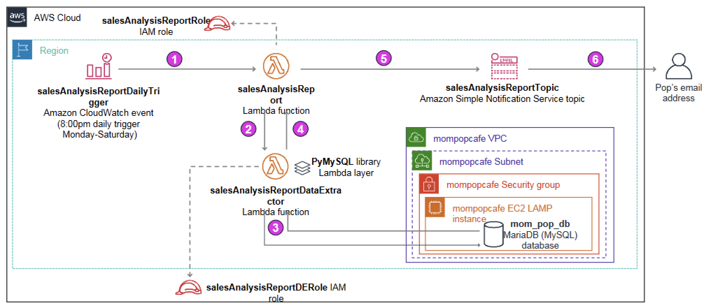

Module 5: Activity 5 - Working with AWS Lambda
Activity Overview
In this activity, you deploy and configure an AWS Lambda-based serverless computing solution. The Lambda function will generate a Sales Analysis Report, by pulling data from a database and emailing the results out on a daily basis. The database connection information is stored in the AWS Systems Manager (SSM) Parameter Store. The database itself runs on an Amazon EC2 LAMP instance.
The diagram here shows the architecture of the Sales Analysis Report solution and illustrates the order in which actions occur.

The function steps shown in the diagram above are as follows:
- [1] An Amazon CloudWatch event triggers the salesAnalysisReport Lambda function at 8:00pm every day, Monday through Saturday.
- [2] The salesAnalysisReport Lambda function invokes another Lambda function, salesAnalysisReportDataExtractor, to retrieve the report data.
- [3] The salesAnalysisReportDataExtractor function runs an analytical query against the Mom & Pop Café database (mom_pop_db).
- [4] The query result is returned to the salesAnalysisReport function.
- [5] The salesAnalysisReport function formats the report into a message and publishes it to the salesAnalysisReportTopic Amazon Simple Notification Service (SNS) topic.
- [6] The salesAnalysisReportTopic sends the message by email to Pop.
During this activity, the Python code for each Lambda function is provided to you, so that you can focus on the SysOps tasks of deploying, configuring, and testing the serverless solution components.
Activity Objectives
After completing this activity, you will be able to:
- Recognize necessary IAM policy permissions to enable a Lambda function to other AWS resources.
- Create a Lambda layer to satisfy an external library dependency.
- Create a Lambda function.
- Deploy and test a Lambda function that is triggered based on a schedule and that invokes another function.
- Use CloudWatch logs to troubleshoot any issues running a Lambda function.
Business Case Relevance
A New Business Requirement for Mom & Pop Café – Daily Sales Analysis Report

Pop is pleased that the website tracks orders placed online. Every day after closing, he now prints out the Order History page and figures out the quantity of each product sold that day. With this information, he can project how many of each product he needs to prepare the next day to better match supply with demand.
However, he has found this manual task to be time consuming. He wished the application would perform the sales analysis automatically and send him a report by email at the end of each day. Could this enhancement be implemented?
Darsh and Sophie consulted with the Matt from the AWS Team who recommended using AWS Lambda. It would be a cost-effective way to meet the business requirement. Take on the role of Darsh and Sophie, and deploy a Lambda-based solution to generate and distribute the sales analysis report.
Activity Steps
Duration: This activity requires approximately 60 minutes to complete.
Accessing the AWS Management Console
At the top of these instructions, choose Start Lab to launch your lab.
A Start Lab panel opens displaying the lab status.
Wait until you see the message "Lab status: ready", then choose the X to close the Start Lab panel.
At the top of these instructions, choose AWS
This will open the AWS Management Console in a new browser tab. The system will automatically log you in.
Tip: If a new browser tab does not open, there will typically be a banner or icon at the top of your browser indicating that your browser is preventing the site from opening pop-up windows. Choose the banner or icon, and choose "Allow pop ups."
Arrange the AWS Management Console tab so that it displays along side these instructions. Ideally, you will be able to see both browser tabs at the same time, to make it easier to follow the lab steps.
Leave this browser tab open. You will return to it later in this activity.
Task 1: Observe the IAM Role settings
In this activity you will create two Lambda functions. Each of those functions will require permissions to access the AWS resources with which they interact. In this task, you analyze the IAM roles and the permissions they will grant to the salesAnalysisReport and salesAnalysisReportDataExtractor Lambda functions that you will create later.
Task 1.1: Observe the salesAnalysisReport IAM Role settings
In the AWS Management Console select Services > IAM.
Choose Roles.
In the Roles detail page, choose the search box and type
sales.In the filtered results, choose the salesAnalysisReportRole hyperlink.
Choose the Trust relationships tab and notice that lambda.amazonaws.com is listed as a trusted entity, meaning that the Lambda service can use this role.
Choose the Permissions tab and notice the four policies attached to this role. Expand each one in turn (by choosing the triangle icon) and analyze the permissions each policy grants:
- AmazonSNSFullAccess: provides full access to Amazon Simple Notification Service (Amazon SNS) resources.
- AmazonSSMReadOnlyAccess: provides read-only access to AWS Systems Manager resources.
- AWSLambdaBasicRunRole: provides write permissions to CloudWatch logs (required by every Lambda function).
- AWSLambdaRole: allows a Lambda function to invoke another Lambda function.
This role will be used by the sales analysis report lambda function you will create later in this exercise.
Task 1.2: Observe the salesAnalysisReportDERole IAM Role settings
Choose Roles again, choose the search box and type
salesagain.In the filtered results, choose the salesAnalysisReportDERole hyperlink.
Choose the Trust relationships tab and notice that lambda.amazonaws.com is listed as a trusted entity.
Choose the Permissions tab and notice the permissions granted to this role:
- AWSLambdaBasicRunRole: provides write permissions to CloudWatch logs.
- AWSLambdaVPCAccessRunRole: provides permissions to manage elastic network interfaces to connect a function to a VPC.
This role will be used by the salesAnalysisReportDataExtractor Lambda function you will create next.
Task 2: Create a Lambda layer and a data extractor Lambda function
In this task, you will first create a Lambda layer, and then you will create a Lambda function that uses the layer.
Start by downloading two required files.
Download the activity files required by this task to your local machine by choosing each of the following links:
salesAnalysisReportDataExtractor.zip
Note: salesAnalysisReportDataExtractor is a Python implementation of a Lambda function that makes use of the PyMySQL open source client library to access the MySQL Mom & Pop Café database. This library has been packaged into pymysql-0.9.3.zip.
Task 2.1: Create a Lambda Layer
In the next steps, you will create a Lambda layer named pymysqlLibrary and upload the client library into it so that it can be used by any function that requires it. Lambda layers provide a flexible mechanism to reuse code between functions by eliminating the need to include the code in each function’s deployment package.
In the AWS Management Console, select Services > Lambda.
If the AWS Lambda panel is not displayed on the left, choose the collapsed menu icon (three horizontal lines icon)—just underneath the AWS logo—to open the panel.
Choose Layers.
Choose Create layer.
Configure the layer settings as follows:
- Name:
pymysqlLibrary - Description:
PyMySQL 0.9.3 library modules - Code entry type: Upload a .zip file
- Choose Upload, navigate to the folder where you downloaded pymysql-0.9.3.zip and open it.
- Compatible runtimes: Choose Python 3.7 .
- Name:
Choose Create.
The message Successfully created layer pymysqlLibrary version 1 is displayed.
Tip: The Lambda Layers feature requires that the ZIP file containing the code or library to reuse conform to a specific folder structure. The pymysqlLibary.zip file used in this activity was packaged using the following folder structure:

For more information on Layer paths, see here.
Task 2.2: Create the data extractor Lambda function
In the “breadcrumb” navigation trail at the top, choose Lambda to open the Lambda Dashboard page.
Choose Create function and configure as follows:
Author from scratch: (selected)
Function name:
salesAnalysisReportDataExtractorRuntime: Python 3.7
Expand Change default execution role, then configure the following:
- Execution role: Use an existing role
- Existing role:: salesAnalysisReportDERole
Choose Create function.
A new page opens and the message Successfully created the function salesAnalysisReportDataExtractor. displays.
Task 2.3: Add the Lambda Layer to the function
In the Function overview panel, under salesAnalysisReportDataExtractor, choose Layers.
In the Layers panel at the bottom of the page, choose Add a layer.
In the Add layer page, configure as follows:
- Choose a layer: Select the Custom layers card
- Custom layers: pymysqlLibrary
- Version: 1
Choose Add.
The function detail page is displayed once again and the Function overview panel shows a count of (1) in the Layers node.
Task 2.4: Import the data extractor Lambda function code
Scroll down to the Runtime settings panel, and choose Edit.
In the Handler field, change the value to
salesAnalysisReportDataExtractor.lambda_handler.Choose Save.
Scroll back up to the Code source panel, and choose Upload from.
Select .zip file.
Choose Upload, then navigate to and select the salesAnalysisReportDataExtractor.zip you downloaded earlier.
Choose Save.
The Lambda function code is imported.
To view the code, double-click on the salesAnalysisReportDataExtractor.py file that now appears in the Code source panel.
Take a moment to review the Python code that implements the function.
xxxxxxxxxxRead the comments included in the code to gain an understanding of its logic flow. Notice that the function expects to receive the database connection information (dbURL, dbName, dbUser and dbPassword) in the event input parameter.
Task 2.5: Configure network settings for the function
The final step before you can test the function is to configure its network settings. As shown in the architecture diagram at the start of this activity, This function requires network access to the Mom & Pop Café database which runs in an EC2 LAMP instance. Therefore, you need to specify the instance’s VPC, subnet and security group information in the function’s configuration.
Choose the Configuration tab, then choose VPC, and choose Edit. Configure the VPC settings as follows:
VPC: MomPopCafeVPC
Subnets: MomPopCafe Public Subnet 1
TIP: You can ignore the warning that recommends choosing at least 2 subnets to run in high availability mode because it is not applicable to the function.
Security groups: MomPopCafeSecurityGroup
Notice that the security group’s inbound and outbound rules are automatically displayed in the Inbound rules panel at the bottom of the screen.
Choose Save.
Task 3: Test the data extractor Lambda function
Task 3.1: Launch a test of the Lambda function
You are now ready to unit test the salesAnalysisReportDataExtractor function. In order to invoke it, you will need to supply values for the Mom & Pop Café database connection parameters. Recall that these are stored in the AWS Systems Manager Parameter Store.
In a new browser tab, open the AWS Management Console and select Services > Systems Manager.
If the AWS Systems Manager panel is not displayed on the left, choose the collapsed menu icon (three horizontal lines icon)—just underneath the AWS logo—to open the panel.
In the AWS Systems Manager panel, choose Parameter Store and record the values for the following parameter names (for example, copy and paste them in a text editor document):
- /mompopcafe/dbUrl
- /mompopcafe/dbName
- /mompopcafe/dbUser
- /mompopcafe/dbPassword
Return to the Lambda Management Console tab, and in the salesAnalysisReportDataExtractor function details page, choose the Test tab.
Configure the Test event as follows:
- New event: (selected)
- Template: hello-world
- Name:
SARDETestEvent - Replace the JSON object in the editor pane below Event name with the following:
xxxxxxxxxx{"dbUrl": "<value of /mompopcafe/dbUrl parameter>","dbName": "<value of /mompopcafe/dbName parameter>","dbUser": "<value of /mompopcafe/dbUser parameter>","dbPassword": "<value of /mompopcafe/dbPassword parameter>"}Important: Be sure to substitute the appropriate parameter values that you recorded in a previous step and to enclose them in double-quotes.
Choose Save changes.
Choose Test.
After a few moments, a box displays above the Test event panel showing the message “Execution result: failed (logs)”.
Task 3.2: Troubleshooting the data extractor Lambda function
In the error box, expand the Details section. Notice the error object returned after the function ran:
xxxxxxxxxx{"errorMessage": --- REDACTED ---}Fix the error
Task 3.3: Lambda function troubleshooting challenge
Try to troubleshoot and correct this issue.
Once you have corrected the problem, return to the salesAnalysisReportDataExtractor Lambda function details page, and choose Test again.
You should now see a green box showing the message “Execution result: succeeded (logs)”. This message indicates that the function ran successfully.
Task 3.4: Place an order and test again
Expand the Details section.
The function returned the following JSON object:
xxxxxxxxxx{"statusCode": 200,"body": []}Notice that the body field, which contains the report data extracted by the function, is empty. This is because there is no order data in the database.
In a new browser tab, access the Mom & Pop Café website and place some orders to populate data in the database.
As a reminder, the URL to open the website has the format http://publicIP/mompopcafe, where publicIP is the public IP address of the MomPopCafeInstance EC2 instance. You can find the public IP in the EC2 console, or you can find it by choosing Show from the Details drop down menu above these instructions.
Be sure to browse to the Menu page on the café website and submit at least one order.
Now that there is order data in the database, return to the Lambda console and test the function again. Choose Test.
Notice that the returned object now contains product quantity information in the body field, similar to the following:
xxxxxxxxxx{"statusCode": 200,"body": [{"product_group_number": 1,"product_group_name": "Pastries","product_id": 1,"product_name": "Croissant","quantity": 1},{"product_group_number": 2,"product_group_name": "Drinks","product_id": 8,"product_name": "Hot Chocolate","quantity": 2}]}Congratulations! You have successfully created the salesAnalysisReportDataExtractor Lambda function.
Task 4: Configure notifications
In this task, you will create a Simple Notification Service (SNS) topic and then subscribe an email address to the topic.
Task 4.1: Create a Simple Notification Service (SNS) topic
In this task, you create the SNS topic where the Sales Analysis Report is published and subscribe Pop’s email address to it. The topic is responsible for delivering any message it receives to all of its subscribers. You perform this task using the Amazon SNS console.
Select Services > Simple Notification Service.
If the Amazon SNS panel is not displayed on the left, choose the collapsed menu icon (three horizontal lines icon)—just underneath the AWS logo—to open the panel.
Choose Topics, and on the right side of the screen, choose Create topic.
The Create topic page opens.
Configure the topic as follows:
- Type: Standard
- Name:
salesAnalysisReportTopic - Display name:
SARTopic
At the bottom of the screen, choose Create topic.
Record the value of the Topic ARN field (for example, copy it into a text document).
You will need to specify it later when you configure the next Lambda function.
Task 4.2: Subscribe to the SNS topic
Choose Create subscription and configure as shown:
- Protocol: Email
- Endpoint: (type in an email address that you can access)
Note: For the purposes of this activity, you are going to pretend that you are Pop in order to receive the generated Sales Analysis Report.
Choose Create subscription.
The dialog box closes and a green pop-up box appears showing the message "Subscription to salesAnalysisReportTopic created successfully".
Check the inbox for the email address that you provided.
You should see an email from SARTopic with the subject AWS Notification - Subscription Confirmation.
Open the email and choose Confirm subscription.
A new browser tab should open and display a page with the message "Subscription confirmed!"
Task 5: Create the sales analysis report Lambda function
Next, you will create and configure the salesAnalysisReport Lambda function. This function is the main driver of the sales analysis report flow. It does the following:
- Retrieves the database connection information from the Systems Manager Parameter Store.
- Invokes the salesAnalysisReportDataExtractor Lambda function which retrieves the report data from the database.
- Formats and publishes a message containing the report data to the SNS topic.
In this task, you will open an SSH session to the CLI Host EC2 instance running in your AWS account that already has the AWS CLI installed as well as the Python code needed to create the next Lambda function. You will then run an AWS CLI command to create the Lambda function. Finally, you will unit test the new function using the Lambda console.
Windows users should follow Task 5.1. Both macOS and Linux users should follow Task 5.2.
macOS/Linux users—click here for login instructions
Task 5.1: Windows SSH
These instructions are for Windows users only.
If you are using macOS or Linux, skip to the next section.
Read through the three points in this step before you start to complete the actions, because you will not be able to see these instructions when the Details panel is open.
- Choose the Details drop down menu above these instructions you are currently reading, and then choose Show. A Credentials window will open.
- Choose Download PPK, and save the labsuser.ppk file. Typically, your browser will save it to the Downloads directory.
- Then exit the Details panel by choosing the X icon.
Download the needed software.
- You will use PuTTY to SSH to Amazon EC2 instances. If you do not have PuTTY installed on your computer, download it here.
Open putty.exe.
Configure PuTTY to not time out:
- Choose Connection.
- Set Seconds between keepalives to
30
This allows you to keep the PuTTY session open for a longer period of time.
Configure your PuTTY session:
- Choose Session
- Host Name (or IP address): Paste the Public DNS or IPv4 address of the Bastion Host instance that you noted earlier.
- Back in PuTTY, in the Connection list, expand SSH
- Choose Auth and expand Credentials
- Under Private key file for authentication: Choose Browse
- Browse to the labsuser.ppk file that you downloaded, select it, and choose Open
- Choose Open again
To trust and connect to the host, choose Accept.
When prompted login as, enter:
ec2-userThis will connect you to the EC2 instance.
Task 5.2: macOS/Linux SSH
These instructions are for Mac/Linux users only. If you are a Windows user, skip ahead to the next task.
Read through the three points in this step before you start to complete the actions, because you will not be able to see these instructions when the Details panel is open.
- Choose the Details drop down menu above these instructions you are currently reading, and then select Show. A Credentials window will open.
- Choose the Download PEM button and save the labsuser.pem file.
- Then exit the Details panel by choosing the X.
Open a terminal window, and change to the directory where you downloaded the labsuser.pem file.
For example, if it was saved to your Downloads directory, run the following command:
xxxxxxxxxxcd ~/DownloadsChange the permissions on the key to be read only, by running this command:
xxxxxxxxxxchmod 400 labsuser.pemReturn to the EC2 console, and choose Instances. Check the box next to the CLI Host instance you want to connect to.
On the Details tab, copy the Public IPv4 address value.
Return to the terminal window, and run the following command (replace <public-ip> with the actual public IP address you copied):
xxxxxxxxxxssh -i labsuser.pem ec2-user@<public-ip>When prompted to allow a first connection to this remote SSH server, enter
YesBecause you are using a key pair for authentication, you will not be prompted for a password.
Task 5.3: Configure the AWS CLI
NOTE: Amazon Linux instances have the AWS CLI pre-installed, however you will still need to supply credentials to connect the AWS CLI client to an AWS account.
Update the AWS CLI software with the credentials.
xxxxxxxxxxaws configureAt the prompts, enter the following information:
- AWS Access Key ID: Choose the Details drop down menu above these instructions, and then select Show. Copy the AccessKey value and paste it into the terminal window.
- AWS Secret Access Key: Copy and paste the SecretKey value from the same Credentials screen.
- Default region name:
eu-west-2 - Default output format:
json
Task 5.4: Create the salesAnalysisReport Lambda function using the AWS CLI
Verify that the file containing the code for the salesAnalysisReport Lambda function is already on the CLI Host by running the following commands:
xxxxxxxxxxcd activity-fileslsBefore you create the function, retrieve the ARN of the salesAnalysisReportRole IAM role. You will need to specify it in the next step.
Tip: To find the ARN of an IAM role, open the IAM console, choose Roles, and select the role name. The Role ARN appears on the Summary page.
Use the AWS Lambda create-function command to create the Lambda function and configure it to use the salesAnalysisReportRole IAM role.
To do this, at the command prompt, paste in the following command. Replace <salesAnalysisReportRoleARN> with the actual value of the salesAnalysisReportRole ARN, which you copied a moment ago and replace <region> with the region where you created the previous lambda function. You can find the region in the Lambda console.
xxxxxxxxxxaws lambda create-function \--function-name salesAnalysisReport \--runtime python3.7 \--zip-file fileb://salesAnalysisReport.zip \--handler salesAnalysisReport.lambda_handler \--region <region> \--role <salesAnalysisReportRoleARN>Once the command completes, it returns a JSON object describing the attributes of the function. You can now proceed to complete its configuration and unit test it.
Task 5.5: Configure the salesAnalysisReport Lambda function
Open the Lambda console.
Choose Functions, and then choose the salesAnalysisReport hyperlink.
The detail page for the function is opened.
Take a moment to review the details of the created function.
In particular, on the Code tab, read through the function code and use the embedded comments to help you understand the logic.
Notice on line 26 that the function retrieves the ARN of the topic to publish to from an environment variable named topicARN. Therefore, you will need to define that environment variable..
Choose the Configuration tab, and on the left side, choose Environment variables.
Choose Edit, and then choose Add environment variable. Configure a new variable as follows:
- Key:
topicARN - Value: (paste in the ARN value of the salesAnalysisReportTopic you copied earlier)
- Key:
Choose Save.
Task 5.6: Test the salesAnalysisReport Lambda function
You are now ready to test the function.
Choose the Test tab.
The Configure test event dialog box opens.
Configure as follows:
- New event: (selected)
- Template: hello-world
- Name:
SARTestEvent
The function does not require any input parameters (just leave the default JSON lines there).
Choose Save changes.
Choose Test.
You should soon see a green box showing the message “Execution result: succeeded (logs)”.
Tip: If you get a time out error, choose Test again. Sometimes, when you first run a function, it takes a little longer to initialize, and the Lambda default timeout value (3 seconds) is exceeded. Usually, you can run it again, and the error will go away. Alternatively, increase the timeout value in the Configuration tab in the General configuration panel.
Expand the Details section.
The function should have returned the following JSON object:
xxxxxxxxxx{"statusCode": 200,"body": "\"Sale Analysis Report sent.\""}Check your email inbox.
If there were no errors, you should receive an email from no-reply@sns.amazonaws.com with the subject Daily Sales Analysis Report.
The email should contain a report that is similar to the one shown here, depending on the orders you placed on the website:

Feel free to place more orders on the Mom & Pop Café website and test the function to see the changes in the report that you receive.
Great job! You have successfully unit tested the salesAnalysisReport Lambda function.
Task 5.7: Add a trigger to the salesAnalysisReport Lambda function
To complete the implementation of the salesAnalysisReport function, configure the report to be invoked every day, Monday through Saturday, at 8:00pm. To do so, you will use an EventBridge (CloudWatch event) as the invocation mechanism.
In the Function overview panel at the top of the salesAnalystReport function details page, choose Add trigger.
In the Add trigger panel, select EventBridge (CloudWatch Events) and configure:
Rule: Create a new rule
Rule name:
salesAnalysisReportDailyTriggerRule description:
Triggers report generation on a daily basisRule type: Schedule expression
Schedule expression: specify the schedule that you desire using a Cron expression.
The general syntax of a Cron expression requires six fields separated by white space as follows:
cron(Minutes Hours Day-of-month Month Day-of-week Year)
In addition, all times in a Cron expression are based on the UTC time zone.
For testing purposes, type an expression that schedules the trigger 5 minutes from the current time. For example:
If you are in London (UTC time zone), and the current time is 11:30am, type the following expression:
cron(35 11 ? * MON-SAT *)If you are in New York (UTC time zone - 5), and the current time is 11:30am, type the following expression:
cron(35 16 ? * MON-SAT *)
This schedules the event to be triggered at 11:35am every day, Monday through Saturday.
Tip: For more information on the syntax of schedule expressions for rules, see https://docs.aws.amazon.com/AmazonCloudWatch/latest/events/ScheduledEvents.html.
Choose Add.
The new trigger is created and displayed on the Configuration tab in the Triggers panel.
Challenge question:
What should the Cron expression be when you deploy the function in production?
Remember that you need to schedule the trigger every day, Monday through Saturday. Assume that you are in the UTC time zone.
Wait until 5 minutes have elapsed, and then check your email inbox.
If there were no errors, you should see a new email from AWS Notifications with a subject of Daily Sales Analysis Report. This one was triggered by the CloudWatch event at the time that you specified in the Cron expression.
Update from Mom & Pop Café

Darsh and Sophie arrived at the café the next morning after deploying the Lambda serverless solution. As soon as Pop saw them walk in the door, he excitedly pulled out his cell phone and showed them the email he had received with the order details in it.
He explained how helpful this new reporting capability is. Now he won't have to log in every day to check the orders database details and manually calculate the orders placed. Instead, he just checks his email and he already knows how much of each item he will need to prepare.
Secretly, Pop hopes that recruiters for competing companies don't find out about Darsh and Sophie's cutting edge technical skills and offer them higher paying jobs! He is sure they will be able to create even more helpful business enhancements to the Mom and Pop Café cloud deployment in the future, if only he can get them to stay. Maybe he should offer them a raise or at least some free dessert! He is thrilled about what they have accomplished.
Activity Complete
Congratulations! You have completed the activity.
- Choose End Lab at the top of this page, and then choose Yes to confirm that you want to end the activity.
A panel will appear, indicating that "DELETE has been initiated... You may close this message box now."- Choose the X in the top right corner to close the panel.
©2021 Amazon Web Services, Inc. and its affiliates. All rights reserved. This work may not be reproduced or redistributed, in whole or in part, without prior written permission from Amazon Web Services, Inc. Commercial copying, lending, or selling is prohibited.